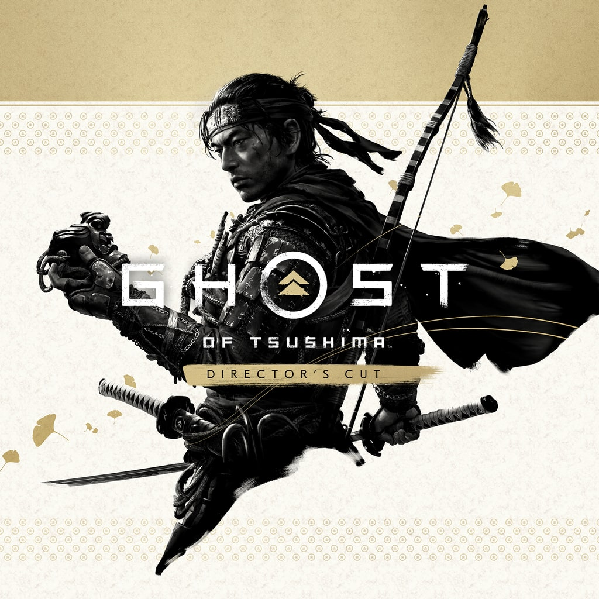

Ghost of Tsushima is an open-world action-adventure game set in 1274, following samurai Jin Sakai as he defends Tsushima Island from the first Mongol invasion of Japan. Jin must abandon strict samurai traditions and honor to become "the Ghost," using stealth, guerrilla tactics, and unconventional weapons to save his home.
Have you ever wanted to be a samurai/ninja. Well this is the game for you to play. The game is beautifully made in its landscape and graphics. The story is very good filled with emotions and depth in its story. You can see how far Jin is willing to go to save his people. The swordplay is very good wiht different styles to use against diffrent enemy types like shields and spears. I would highly recommend this game to somone who is looking for a samuria game with a stealth element in its gameplay.